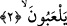
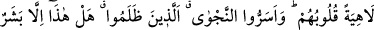
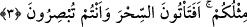

Baklî’nin el-Arâis’inde şöyle der: “Allah Teâlâ herkesi, gaflet uykusundan uyansınlar
diye kendisiyle hesap konusunda tartışmaktan sakındırmış ve menetmiştir. Halbûki eğer
bilecek olsalar hesap onlara her şeyden daha yakındır. Çünkü Allah Teâlâ, kullarını her
ân ve her nefeste hesaba çeker. O’nun hesabı kıldan ince ve karıncanın kaya üzerindeki
ayak seslerinden daha gizlidir. Bunu ancak her nefeste ve her adımda kendi nefislerini
hesaba çeken murâkabe ehli bilir. Onlar ise Allâh’ı müşâhededen gaflette ve
perdelenmiş haldedirler. O’na itâatten yüz çevirmişlerdir. Çünkü onların tâatlerden
hazları ve müşahedelerden nasipleri yoktur.”
2. Rablerinden kendilerine ne zaman yeni bir ihtar gelse, onlar bunu, hep alaya
alarak dinlerler.
“Rablerinden kendilerine ne zaman yeni” öğüt almaları için uyarmak üzere onların
kulaklarında tekrarlandığından ilâhi hikmet gereğince indirilişi yenilenen “bir ihtar
gelse,” sanki zikrin kendisi olan Kur’an’dan kendilerine en mükemmel bir üslûpla
hesabı hatırlatan, en etkili tarzda gafletten ikaz eden âyetler nâzil olsa “onlar bunu, hep
alaya alarak dinlerler.”
Şu halde “
(yeni)”, her vakitte maslahat îcâbı ve ihtiyaca göre Kur’ân’ın
indirilmesidir. Yoksa kadîm ve ezelî bir sıfat olan ilâhî kelâm değildir. Aynı şekilde
“gelmek”le vasfedilen, harfler ve seslerden meydana gelen zikrin/ihtarın sonradan
meydana gelişi (hudûsü) konusunda tartışma yoktur.
Dediler ki: Kur’an müşterek bir isimdir. Hem Allâh’ın sıfatı olan ezelî kelâma bu
isim verilir. O, kadîm olan kelâm-ı nefsîdir. Onun hâdis olduğunu iddiâ eden, küfre
düşer. Hem de Allâh’ın sıfatı olan ezelî kelâma delâlet eden şeye de bu isim verilir. O
ise tilâvet olunan hâdis nazmdır. Yâni söz ve yazıdır. Kim onun kıdemini/ezelîliğini
iddiâ ederse, katmerli cehaletini tescil ve ilan etmiş olur.
3. Kalpleri hep eğlencede (gaflette), hem o zalimler şu gizli fısıltıyı yaptılar: “Bu
(Muhammed), sizin gibi bir beşer olmaktan başka nedir ki! Siz şimdi gözünüz göre
göre büyüye mi kapılıyorsunuz?”
“Kalpleri hep eğlencede(gaflette),” Bu cümle, müşriklerin durumunu beyân